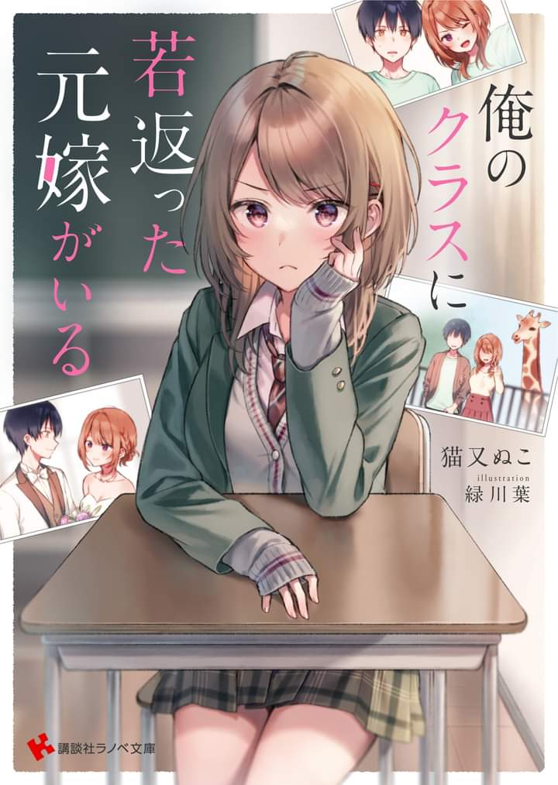

I Have A Rejuvenated Ex-wife In My Class
Novel Info's
Status: Completed/Finished
Genre: Comedy, Romance, School Life
Author: Nekomata Nuko
Illustrator: Midorikawa Yo
Chapters: 26
Original Publisher: Kakuyomu, Kodansha
English Publisher: N/A
Fan Translation: WN Scans
Description/Sypnosis
Kohei Kurose and Yuzuhana Koikawa were hit by a car right after they filed for divorce and they both went back in time on the day of the high school entrance ceremony.
Knowing that they had both returned to the past, they said, “I will never get involved with you again in order to live a happy life! I swear!
But, they both share the same hobbies and are very compatible with each other.
As a result, everytime I go, I end up having to spend time with her. I was reluctant at first, but as time went on I realized that spending time together is much more fun than spending time alone
This is a story about an ex husband and wife who return to their youth and are attracted to each other again.
Download Links
Epub & Pdf